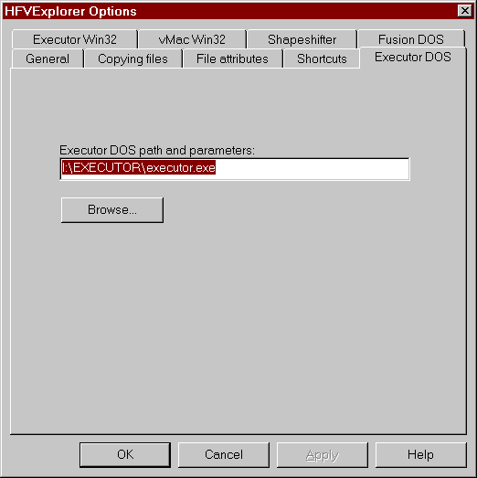

Select the path for Executor DOS version. You can also enter the parameters here (for example):
I:\EXECUTOR\executor.exe -system 7
Or, leave it like in the picture above and create "commands.txt" file (this is a feature of Executor, not HFVExplorer), containing the following:-system 7
When DOS Executor is launched, HFVExplorer creates a temporary parameter file and launches Executor:I:\EXECUTOR\executor.exe @TmpParam.txtThis is done in order to work around the parameter length limitations posed on DOS programs.